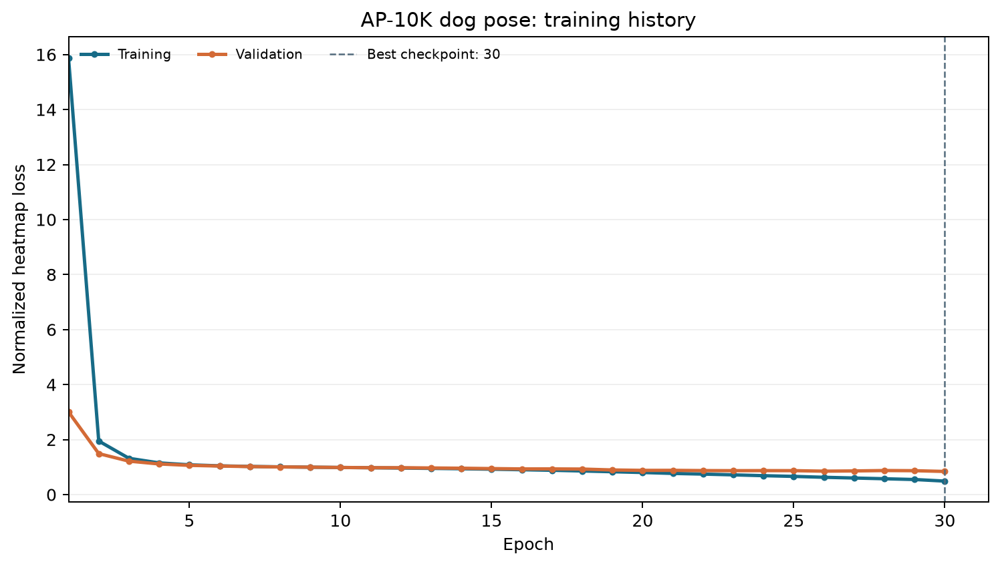
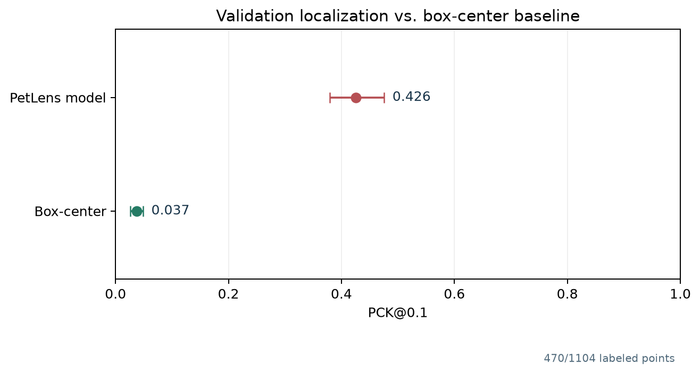
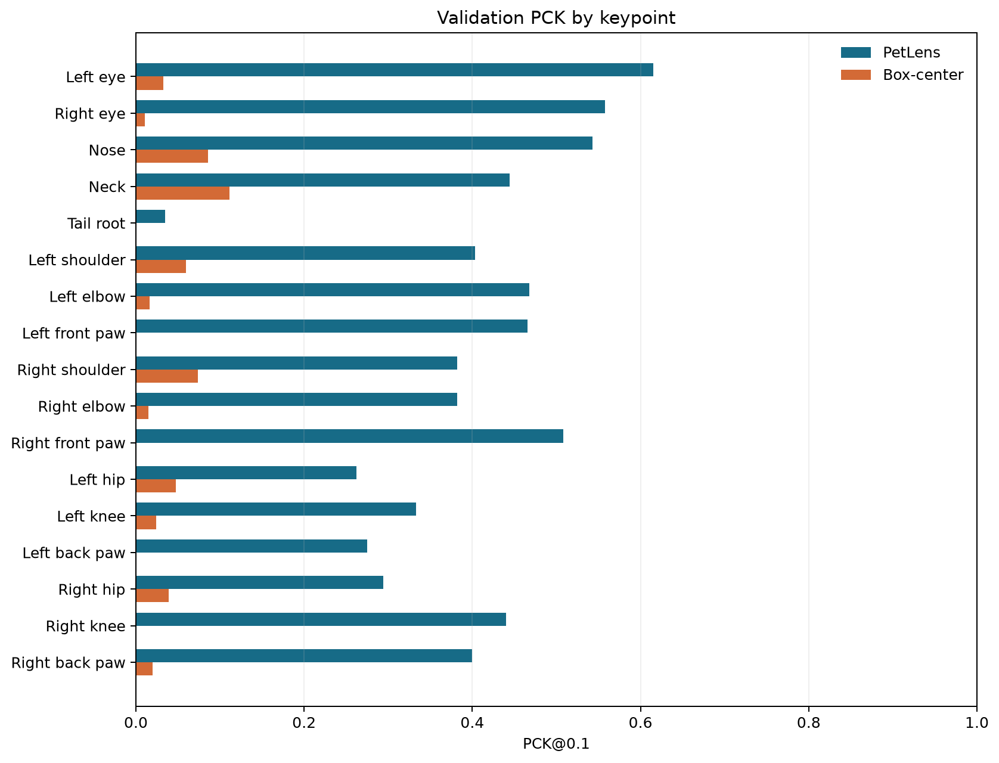
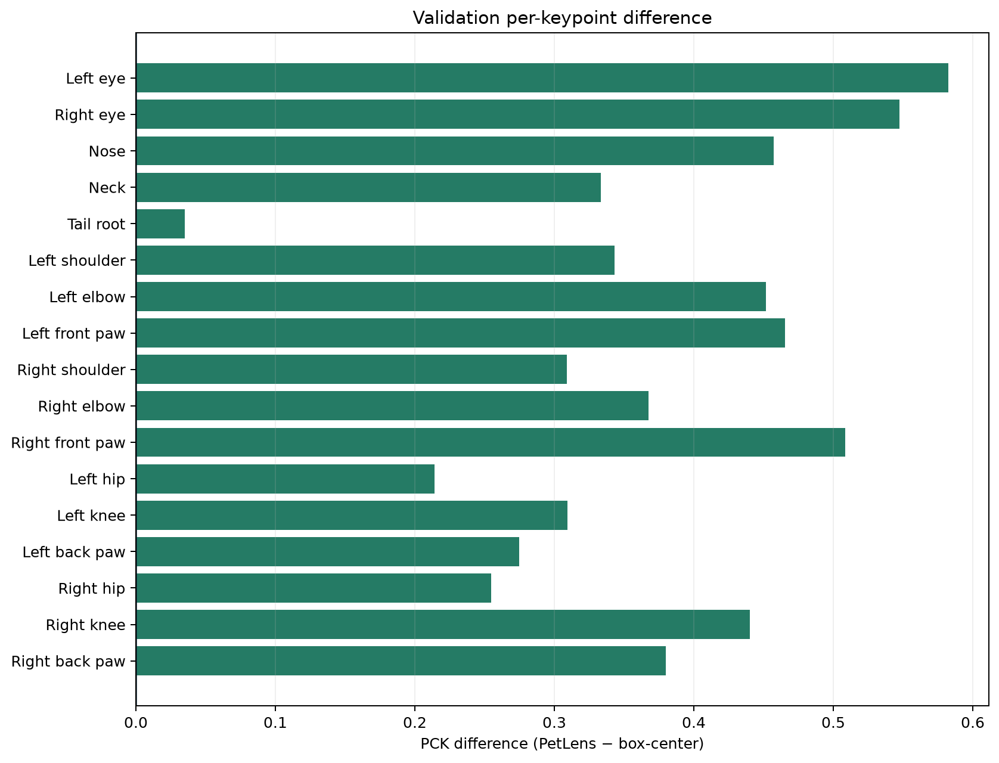
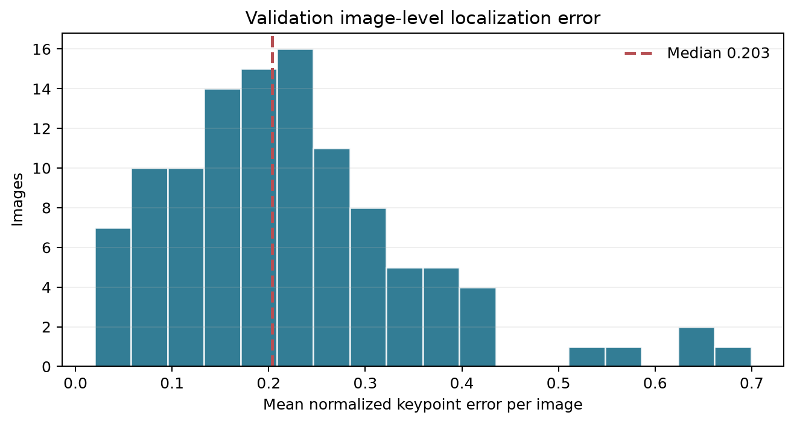
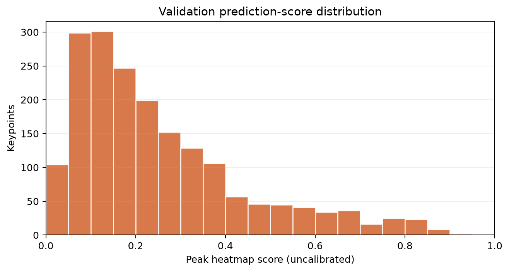

Development validation only. This AP-10K result uses the validation split, which selected the checkpoint. It is not independent test evidence and does not measure walking-video tracking, gait, or osteoarthritis. The app's production inference remains motion-only.
Model run f15db4ca-667b-48c0-895d-950d8599bbfc,
checkpoint SHA-256 59a25c5cab004c89b3f9fe5afa200bd9b67161aaf6c05e5a99261ceaf95fbf98,
epoch 30. Dataset: AP-10K official dog-only validation split,
110 instances and
1104 visible keypoints. PCK@0.1 is
470/1104 (0.4257);
box-center baseline 41/1104
(0.0371).

Actual recorded train/validation loss. The dashed line marks the selected checkpoint.

PCK@0.1 and 95% image-bootstrap intervals on the 110-instance validation split.

All 17 AP-10K landmarks, evaluated with the same oracle dog boxes and threshold.

PetLens minus box-center PCK for every landmark, in proportion points.

Per-image mean normalized localization error; averages only labeled, predicted visible points.

Peak heatmap scores are uncalibrated and are not probabilities of correctness.